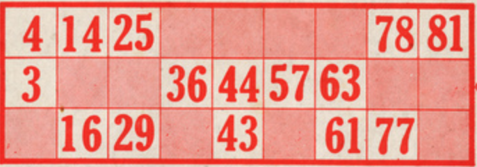

O jogo do Bingo
Neste tutorial, iremos desenvolver uma versão simplificada de um jogo conhecido internacionalmente - o Jogo do Bingo - e que foi criado nos EUA em 1929.
O jogo é composto por uma tômbola de bolas numeradas de 1 a 99, que serão sorteadas sequencialmente.
Cada jogador tem um ou mais cartões com 15 números. Estes cartões dispõem os números em 3 linhas e 9 colunas.

Cada linha tem 5 números e cada coluna terá um ou dois números, sendo que as colunas têm os números de cada uma das 9 dezenas (1-9, 10-19, 20-29, 30-39, 40-49, 50-59, 60-69, 70-79, 80-90).
Neste jogo iremos apenas determinar o vencedor que complete um dos seus cartões - Bingo! - ignorando o primeiro a concluir uma linha.
Dada a sua simplicidade, optou-se por uma interface por texto, o que também simplifica a estruturação do programa:
1. Uma função que cria os cartões de jogo;
2. E outra função que encapsula todo o jogo.
A criação dos cartões
Esta função cria um conjunto de 15 números não repetidos. Para tal utiliza-se a abstração Conjunto (Set) dado que evita a ocorrência de números repetidos.
import random
# número de números em cada cartão
NUMEROS = 15
# preenche um cartao com 15 números diferentes
def preenche_cartao():
cartao = set()
while len(cartao) < NUMEROS:
cartao.add(random.randint(1,90))
return cartao
|
|
Observe que esta função utiliza um ciclo condicional
(while) em vez de um ciclo contado (for)... Pista: Estude o funcionamento da função add em conjuntos... |
|
|
Repare
que, para simplificação, esta função não respeita uma das regras de criação
dos cartões:
Considere como desafio incluir esta regra... |
A preparação do jogo
O jogo do bingo é implementado com a função jogo(), que inicia com a criação das bolas numeradas de 1 a 90
def jogo():
# cria o conjunto inicial de bolas a sortear
bolas = list(range(1,91))
Em seguida cria-se um cartão para o jogador humano e um cartão para o computador.
# cartão de cada jogador
cartaoHumano = preenche_cartao()
cartaoComputador = preenche_cartao()
numeros_ja_saidos = set()
E a versão de impressão de cada cartão, que é uma lista ordenada.
# versão de impressão
bilheteHumano = list(cartaoHumano)
bilheteHumano.sort()
bilheteComputador = list(cartaoComputador)
bilheteComputador.sort()
|
|
Porque será necessário criar uma lista para ordenar os números? |
O ciclo de jogo
O ciclo de jogo repete-se até que sejam esgotadas as bolas numeradas.
# inicialização
while len(bolas) > 0:
A cada jogada é sorteado um número... que é depois adicionado à lista de numeros que saíram.
# retira número
if input("E roda a esfera...") == "end":
return
numero_sorteado = bolas.pop(random.randint(0, len(bolas)-1))
print (numero_sorteado)
numeros_ja_saidos.add(numero_sorteado)
Em seguida, calcula-se quantos números faltam sair no cartão de cada jogador.
# mostra bilhete do jogador humano
nH = NUMEROS - len(cartaoHumano.intersection(numeros_ja_saidos))
print(bilheteHumano, "- faltam", nH)
nC = NUMEROS - len(cartaoComputador.intersection(numeros_ja_saidos))
print(bilheteComputador, "- faltam", nC)
|
|
Para calcular os números que já saíram em cada cartão utiliza-se o comprimento do conjunto devolvido pelo método intersection() dos conjuntos. Este método calcula a quantidade de números que se encontram, simultaneamente, no cartão do jogador e no conjunto de valores que já saíram. |
Finalmente, verifica-se se há um vencedor... Bingo!
if nC == 0 and nH == 0:
print("Empate...")
break
elif nC == 0:
print("Bingo! Ganhou o computador.")
break
elif nH == 0:
print("Bingo! Ganhou o jogador humano.")
break
Desafio final
Evolua esta versão do jogo para incorporar as regras de criação dos cartões e a possibilidade de haver vários jogadores, com vários cartões.
Também poderá desenvolver uma versão gráfica utilizando o módulo p5...
|
|
Partilhe o seu jogo!
|